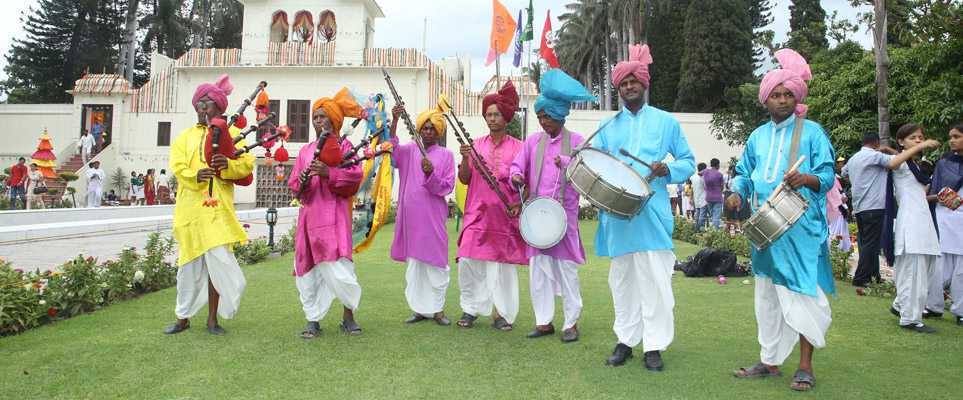

Haryana has emerged through the ravages of times and has still managed to hold on to many of its traditions- some good and some not so good. The people of Haryana strictly adhere to their customs and cultural traditions. Yoga and chanting of Vedic mantras have become an innate part of their lifestyle. The dialect of Haryana, popularly known as Haryanvi, Bangaru or Jatu; is known to be a bit crude but is full of earthy humour and straightforwardness. Most of the people of Haryana have more or less equal social status. The factor of age is a really dominating trait in Haryana, as all elders, whether rich or poor are treated with utmost respect and honour. Thus, it displays a very socialistic nature. In some parts of the state, the economic status of an individual is also determined by the number of cattle he owns! People here tend to retain their racial purity by not allowing marriages in the same gotra. Widow Remarriages are also not encouraged and it is hence a very big obligation to the community. Apart from all the vibrant and earthy customs of Haryana, there are a lot of practices here which needs amendment at the earliest. The major among them are the denial of education to the girl child, female infanticide and practice of the purdah.
Along with the mesmerising architecture and numerous tourist attractions, Haryana has gained a lot of fame for the lively fairs organised there. The most acclaimed of these are-
This fair set up in the suburbs of Faridabad every year is a heaven for craft and handloom lovers. With the splash of colours and the rhythm of the drum beats, this fair beautifully portrays the rural part of Haryana culture and is a super success every year. Adorned with multi-cuisine food courts and different adventure and amusement rides, this mela is attended by thousands of people from nearby places.
Organized in the months of June and July at 'Yadavindra Gardens' of Pinjore, this mela is a great treat for the mango lovers. The Mango Mela does not only quenches the people's desires o the different variety of mangoes but also offers a forum to support the farmers to sell their mangoes and teach them about the latest technology to raise their mango production.
To celebrate various occasions and events, a number of vibrant festivals take place in Haryana. These festivals include Teej, Guga Navmi, Gita Jayanti, Kaartik Cultural Festival and a unique celebration known as Sohna Car Rally. The most famous festival of all times is Teej. It is usually celebrated on the third day of 'Shrawana' month. The festival is celebrated with great pomp and enthusiasm all over the state. Swings are set up in the gardens and the girls apply henna on their hands. Young Girls and women get dressed up in colourful and vibrant clothes and engage in dancing and singing throughout the evening.

The authentic cuisine of Haryana offers finger licking delicacies namely- Kachri ki Sabji, Churma, Malpuas, Bathua Raita, Meethi Gajar, Singhri ki Sabji, Meethe Chawal, Rabri and much more. It will surely woo your heart and leave you with a lingering aftertaste, asking for more. The people of Haryana give a lot of importance to milk products like curd and lassi, and hence incorporate them in all their meals.

From time immemorial, Haryana has a tradition of preparing and distributing 'goond ladoos', prepared in desi ghee, on the arrival of a new born. Likewise, there is a range of 'choormas' that are served on specific occasions. Some other traditional delicacies include paranthas with bathua raita, steamed rice with kadhi, khichri, kadai hara cholia and some different varieties of rotis like besan masala roti and bajra aloo roti.
Arts and crafts of Haryana comprise of the various forms of dance, music, pottery, embroidery, painting, weaving, sculpting, etc. The speciality is the very popular village handicrafts. Apart from being the major source of income for the craftsmen, these art forms are a super hit among tourists. The hues of pottery, the moulds of clay, the shimmer of handicrafts, the beads of terracotta; all combine to display the creative imagination of thousands of artists.

Like any other region of India, Haryana also has its traditional form of dance and music which is quite popular among people from all over the globe. The famous traditional dance forms include- Ghoomar, Gangaur and Khoria dance. The ancient folk music of Haryana is mainly of two types- classical and countryside. The classical form belongs to the great legends while countryside music includes songs with varied ragas, sung in Hindustani style. These ragas comprise of Pahari style, Kafi, Bhairavi and Malhar style of music. Also, different types of musical instruments like Dholak, Drum, Matka, Harmonium, Damru, Shehnai, Manjira and Nagara, along with the Khanjri, Sarangi, Tasha and Ghunguru, etc. are played during the singing and dancing festivals. The handicraft manufacturers in Haryana offer a variety of arts and crafts including pottery making, exquisite furniture and woodcarving, handlooms, etc. Most popularly weaved handlooms are the shawls and durries. Haryana Shawls are very well-known because of the Phulkari, which has a great demand for its rich embroidery all over the globe.
The vibrancy of the people of Haryana is quite evident in their lifestyle too. Their simplicity and spirited enthusiasm find expression in their way of dressing up. Women of Haryana show a special affinity towards colours. Their basic trousseau includes Daaman, Kurti & Chunder. 'Chunder' is the long, coloured piece of cloth, decorated with shiny laces and motifs, and is meant to cover the head. 'Kurti' is a shirt like a blouse. The 'Daaman' is the flairy ankle-long skirt, in striking vibrant colours. The men generally wear 'Dhoti', the wraparound cloth, tucked in between the legs with a white-coloured kurta worn on top of it. 'Pagri' is the traditional headgear for men, which is now worn mainly by the old villagers. All-white attire is a status symbol for men.